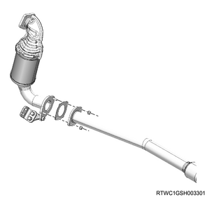

Engine mounting installation (4JJ1)
1. Engine mounting installation
1. Install the engine mounting to the engine foot.
Note
- Install the right and left engine feet to the engine mountings.
Tightening torque： 52 N・m { 5.3 kgf・m / 38 lb・ft }
2. Install the engine foot to the engine.
Note
- Keep the engine suspended but not lifted up, and install the right and left engine feet to the engine.
Tightening torque： 51 N・m { 5.2 kgf・m / 38 lb・ft } M10
Tightening torque： 157 N・m { 16.0 kgf・m / 116 lb・ft } M14
3. Lower the engine.
4. Connect the engine mounting to the frame.
Tightening torque： 60 N・m { 6.1 kgf・m / 44 lb・ft }
Caution
- Tighten the bolts with the engine securely seated in the frame.
- Tightening the bolts with the engine mounting detached from the frame will cause the bolts to become loose.
5. Install the heat protector to the engine mounting.
Note
- Install to the right side engine mounting.
Tightening torque： 8.2 N・m { 0.84 kgf・m / 73 lb・in }
Note
- Check that the stopper of the heat protector is making contact with the engine mounting end as shown in the diagram.
- Heat protector stopper
- Engine mounting
6. Remove the wire from the engine hanger and the hoist.
7. Remove the rear engine hanger from the cylinder head.
8. Remove the front engine hanger from the cylinder head.
2. Oil pressure switch connect
1. Connect the connector to the oil pressure switch.
3. Starter motor installation
1. Install the starter motor to the rear plate.
Tightening torque： 94 N・m { 9.6 kgf・m / 69 lb・ft }
2. Connect the earth cable to the starter motor.
4. Transmission oil level gauge tube installation
1. Install transmission oil level gauge tube to the oil pan.
5. Oil level gauge guide tube installation
1. Apply the engine oil to the O-ring.
2. Install the oil level gauge guide tube to the crankcase.
Tightening torque： 25 N・m { 2.5 kgf・m / 18 lb・ft }
6. Front propeller shaft assembly installation
7. Turbocharger bracket installation
1. Install the turbocharger bracket to the turbocharger and the cylinder block.
Tightening torque： 25 N・m { 2.5 kgf・m / 18 lb・ft }

8. Catalyst converter installation
1. Install the catalyst converter to the turbocharger assembly.
Tightening torque： 27 N・m { 2.8 kgf・m / 20 lb・ft }

Caution
- Do not reuse the gasket.
2. Temporarily tighten the catalyst converter to the crankcase.
Note
- Temporarily tighten in the order shown in the diagram.

3. Securely tighten the catalyst converter to the crankcase.
Note
- Firmly tighten in the order shown in the diagram.
Tightening torque： 94 N・m { 9.6 kgf・m / 69 lb・ft }
4. Connect the catalyst converter to the front exhaust pipe.
Tightening torque： 67 N・m { 6.8 kgf・m / 49 lb・ft }

Caution
- Do not reuse the gasket.
9. Air cleaner assembly installation
1. Install the air cleaner assembly to vehicle.
Tightening torque： 20 N・m { 2.0 kgf・m / 15 lb・ft }

- Air cleaner assembly
- MAF sensor
- Vacuum hose
- Blow-by hose
- Intake pipe
- Barometric pressure sensor
2. Connect the intake pipe to the turbocharger assembly.
Tightening torque： 4 N・m { 0.4 kgf・m / 35 lb・in }
Note
- Install by aligning the alignment mark position as shown in the diagram.

- Alignment mark
3. Connect the vacuum hose to the air cleaner assembly.
4. Connect the harness connector to the barometric pressure sensor.
5. Connect the harness connector to the MAF sensor.
10. Blow-by hose connect
1. Connect the blow-by hose to the cylinder head cover.
11. Intake air duct installation
1. Install the intake air duct to the turbocharger and the intercooler.
Tightening torque： 25 N・m { 2.5 kgf・m / 18 lb・ft } Nut, bolt
Tightening torque： 5 N・m { 0.5 kgf・m / 44 lb・in } Clamp (Intercooler side)

12. Cowl panel installation
1. Install the cowl panel to vehicle.
Note
- Install with the 8 bolts.

13. Wiper linkage connect
1. Connect the wiper linkage to vehicle.

- Nut
- Bolt
Tightening torque： 5.3 N・m { 0.5 kgf・m / 46 lb・in }
Note
- Connect the connector to the wiper motor.
14. Cowl cover installation
1. Install the grommet to the cowl panel.
Note
- Install with the top mark facing upward.
- After installing the grommet to the cowl panel, verify that it is installed securely.
- If the grommet drops off when it is pushed back into the cowl panel, install it again.

- Top mark
2. Install the cowl cover to the cowl panel.
3. Connect the washer hose to the clip.

- Grommet
- Connection of washer hose
15. Side cowl cover installation
1. Install the side cowl cover to the body.

- Side cowl cover
16. Wiper arm installation
1. Install the wiper arm to vehicle.
Caution
- Confirm that the wiper motor is stopped at the auto stop position.
Tightening torque： 31.0 N・m { 3.2 kgf・m / 22.9 lb・ft }

- 29 mm (1.14 in)
- 36.5 - 51.5 mm (1.44 - 2.03 in)
- 18 mm (0.71 in)
17. Wiper arm cover installation
1. Install the wiper arm cover to the wiper arm.
18. Engine cover installation
1. Install the engine cover to the engine.

- Engine cover
19. Engine hood assembly installation
1. Temporarily tighten the hinge bolt to the engine hood assembly.
Note
- Align the hinge with the marking made during removal.
2. Inspect the clearance.
Note
- Check the engine hood assembly and the fender.
3. Adjust the clearance to the specified value.
Note
- Adjust the installation of the engine hood hinge to adjust the clearance.

- Clearance: 4.0 mm {0.16 in}
- Height, level difference: -1.5 mm {-0.06 in}
Note
- Turn the hood rest to adjust its height, and adjust the level difference against the engine hood.

- Hood rest
4. Apply the grease to the striker.
Note
- Apply a thin layer of grease to the striker.
5. Install the engine hood garnish to the engine hood.
Note
- Tighten the 6 nuts to the specified torque.
Tightening torque： 6 N・m { 0.6 kgf・m / 53 lb・in }
6. Securely tighten the hinge bolt to the engine hood assembly.
Tightening torque： 6.5 N・m { 0.66 kgf・m / 58 lb・in }
7. Connect the tube to the washer nozzle.
20. Underguard installation
Note
- The following applies to models with an under air deflector.
1. Install the under air deflector to the frame.
Note
- Tighten the clip and the 5 bolts.
Tightening torque： 42 N・m { 4.3 kgf・m / 31 lb・ft }

- Bolt
- Clip
Note
- The following applies to models with front and rear underguard.
2. Install the rear underguard to the frame.
Note
- Tighten the 4 bolts.
Tightening torque： 42 N・m { 4.3 kgf・m / 31 lb・ft }
3. Install the front underguard to the frame.
Note
- Tighten the 5 bolts.
Tightening torque： 42 N・m { 4.3 kgf・m / 31 lb・ft }

- Front underguard
- Rear underguard
- Bolt
Note
- The following applies to models with front and rear underguard and an oil pan guard.
4. Install the rear underguard to the frame.
Note
- Tighten the 4 bolts.
Tightening torque： 42 N・m { 4.3 kgf・m / 31 lb・ft }
5. Install the oil pan guard to the frame.
Note
- Tighten the 4 bolts.
Tightening torque： 90 N・m { 9.2 kgf・m / 66.4 lb・ft }
6. Install the front underguard to the frame.
Note
- Tighten the 5 bolts.
Tightening torque： 42 N・m { 4.3 kgf・m / 31 lb・ft }

- Front underguard
- Oil pan guard
- Bolt oil pan guard
- Bolt
- Rear underguard
21. Battery ground cable connect
1. Connect the battery ground cable to the battery.
2. Close the engine hood assembly.
3. Lower vehicle.